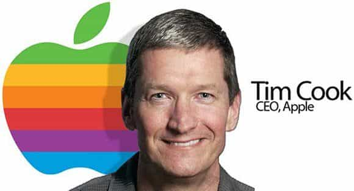
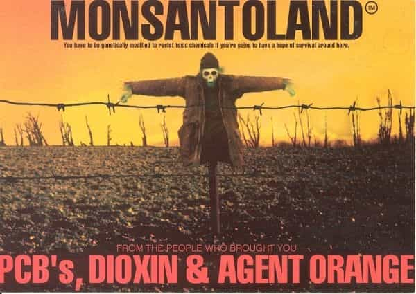
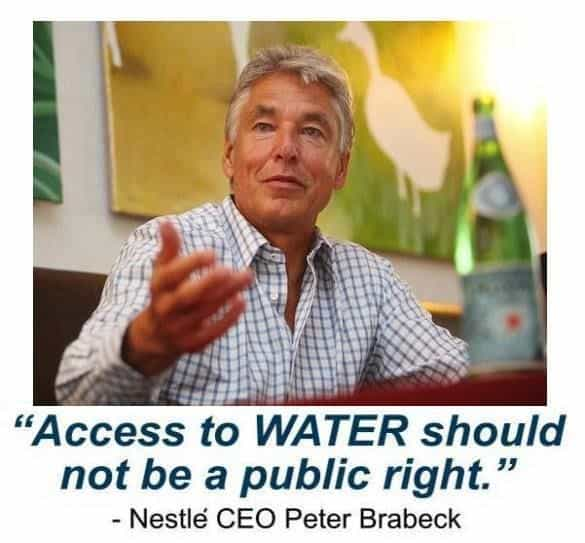

< < < Back
5 Companies To Boycott If You Want The West To Survive – Return Of Kings
Gentlemen, it is no longer effective to simply voice your opinion; that era is gone. If we wish to be effective now, we must vote with our dollars.
We must stop buying goods from any company which does not support our goals, for to do so would only make them stronger. And let me tell you, there’s PLENTY of companies that are actively fighting against our goals. Whether it be the massive conglomerate with an HR department the size of a small city, or the corporation that donates 15 million a year to LGBTABCD1234 causes, there’s a plethora of organizations that are incredibly financially powerful, that are actively trying to ruin masculinity and the West.
But, we cannot simply give into their demands—we must begin to take our country back, and this starts by ceasing to fund evil companies, while simultaneously redirecting your cash flow to companies that support hard work, masculinity, and traditionalism.
Here’s five companies to avoid if you want the West to survive:
1. Google: Actively Censoring History, Censoring Negative Hillary Searches
Despite Google’s sketch, the team was actually all white.
Perhaps the worst offender on this list, Google is also one of the most powerful conglomerates in existence. Not only do they own YouTube, Android, and Motorola, but they’re also the single largest search engine in the entire world.
Google has been hungrily snatching up companies since 2001, and currently shows no signs of slowing down. In fact, not only have they been gaining more financial power by purchasing various companies and establishing monopolies in several digital markets, but they’ve also been actively filtering search results to wage a war of information.
Yes, that’s right—Google is ACTIVELY filtering search results to influence elections and censor history. Don’t believe me? Go search “European people art” in google images. You will be shocked and appalled at the results that come up.
They’ve also been slowly, but steadily pushing a multi-culturalist agenda by actively race-censoring the Juno Mission Team and supporting various globalist causes. They’ve been teaming up with Twitter to censor freedom of speech, working with the US government to collect your data, and censoring Hillary dissenters in an attempt to help her win the election.
I firmly believe that if we do not stop this entirely amoral corporation, we will enter into a world not unlike Orwell’s. It’s terrifying to think that Google controls 95% of the information traffic in the US, but it’s true. If they wish, and believe me, they do, they could effectively wipe the internet of vast swathes of history, in order to push their agenda.
The solution: switch over to Firefox browser. Their former CEO has been very outright in his disgust with gay marriage, they don’t collect your information, and best of all, it’s far faster than Google Chrome. Switch over to a search engine that doesn’t wipe out white history, such as Duck Duck Go, and consider getting a phone other than Android.
I realize that this shift is massive—Google is a gigantic corporation that permeates nearly every aspect of our lives, but we must do something about it. Even if it’s the little rebellious act of using a different browser or spreading the word, just do something. We cannot afford to have the internet censored.
2. Starbucks: Supporting Degenerate Causes, Donating To Transsexual Activist Groups
Ah, Starbucks—the home of basic bitches, Toms-sporting hipsters, and pumpkin spice lattes. I will admit that they have some damn good coffee, but I cannot in good conscience support them.
As Roosh has said before, not only does Starbucks openly support gay marriage, but they also openly support transsexualism. As most men of ROK already know, I don’t need to point out that in 5 or 10 years they may be supporting pedophiles as well.
In addition to this, they also fund Planned Parenthood. Now, I don’t know about you men, but I firmly believe that when a society widely accepts abortion it’s only a matter of time before its collapse. It encourages slutty behavior that breaks apart the family unit which supports a nation.
The solution: don’t buy coffee from Starbucks. There’s a billion other places that you can get coffee from; two of my favorites are Red Coffee and Onnit’s Dark Roast Coffee. Need coffee on the go? Then either brew it at home and put it in a thermos (saving money) or stop at Peet’s instead.
I’ve personally driven out of the way many times just to support Peet’s, because I cannot in good conscience buy coffee from a company that supports men and women who mutilate their genitals and undergo hormone replacement therapy, because they “feel like they were born in the wrong body.” I simply cannot condone this.
3. Apple: Tax Fraud, Child Labor, And LGBT Rights

The days of Apple being an innovator are long gone; now they’re simply riding off of the success that Steve Jobs, the genius that he was, earned them. Think about it—when’s the last time that Apple came out with a revolutionary product? They’ve been rehashing old technology since the iPhone.
Apple’s CEO, Tim Cook, has said several times that he is a gay man and that he supports gay marriage. And not only this, but they’ve also been ordered to cough up $626 million dollars for infringing upon other companies patents. Oh, and by the way, they use child labor, have committed tax fraud, and in case you haven’t noticed, iTunes is a giant pain in the ass to use.
The solution: rather than using iTunes, consider using Foobar 2000. This is, by far, my favorite music organizing software on the face of the earth. It’s highly customizeable, to the point where you can literally change the columns, move the various boxes and organizational tools around, and change the text and background colors.
I’m not going to lie and say that there’s a good company that can replace the iPod, because I really don’t think there is. But, hey—doing something is better than doing nothing. Instead of using iTunes, which has slowly been increasing their prices, frequently creates duplicates, and gets more glitchy with each update, use Foobar 2000.
4. Bayer-Monsanto: Destroying Our Ecosystem, Lowering Testosterone Levels, and Making Men Sick

As I wrote about before, Bayer recently acquired the agricultural giant Monsanto for $66 billion dollars. This is, perhaps, one of the most terrifying acquisitions in the history of the West.
For those of you who don’t know, Bayer is evil enough as it is. They’ve been known to continue selling drugs that spread AIDS, their pesticides are responsible for destroying gigantic droves of bees, and need I remind you of how many young girls Yaz and Yasmin have killed?
In addition to this, Monsanto has been steadily decreasing testosterone levels with their GMO’s and chemicals, they’ve been creating new, drug-resistant super-strains of fungi, and they’ve been knowingly increasing the cancer rates in the West at an exponential rate.
Bayer is effectively Big Pharma, owning a whopping 23% share of the pharmaceutical industry (depending on the estimate you consult), and Monsanto is effectively Big Agra, owning an ungodly 90% of the GMO seed market. Together, these two titans would create a monopoly unlike any since the Carnegie Steel Company.
And that’s just what Bayer plans to do—they want to make you sick and lower your testosterone levels with GMO’s, pesticides, and phyto-estrogens, and then have you shell out $1,000 a month for their “medicine,” that will only mask your symptoms, and end up giving you 10 other side effects.
The solution: buy food from your local farmers. Not only do farmers markets require the produce sold to be organic, which means that you won’t get any cancer-causing, testosterone-lowering GMO’s or pesticides, but buying at farmers markets also creates a stronger local economy.
Take your hormones into your own hands—look into ways to boost your testosterone levels naturally, don’t shop at stores like Walmart that are typically loaded with GMO’s, and use natural remedies and healthy living to avoid getting sick and having to buy “medicine.”
5. Nestle: Denying The Right To Water, Pressuring Mothers To Stop Breastfeeding Baby Boys

No, that quote is not a lie—Peter Brabeck, the CEO of Nestle, has been actively snatching up water supplies around the US for quite some time now. He has previously stated that his goal is to control all of the water in a world where water is a diminishing resource.
If you ask me, the man is a psychopath and has no place leading a massive global conglomerate. No man who would so ruthlessly seize and monetize a vital life source such as water deserves to be on this planet, let alone leading the largest food company in the world (by revenue). Now, of course he’ll claim that he’s doing good, like he did after buying off an entire town’s water supply just days ago, but he is not doing good.
Nestle is callously seizing water supplies all over the world, but their evil doesn’t stop there—they’ve indirectly murdered thousands of babies by lying to mothers about the benefits of breast milk. “Oh, no! Breast milk doesn’t contain probiotics, micro-nutrients, and healthy hormones for your baby boy! Buy our artificial, factory-made formula instead!” says the Nestle sales rep.
And what’s worse is that they’ve been known to dress their sales reps in white doctors’ scrubs to fool mothers into believing that their profit-motivated advice is in their babies’ best interests. It isn’t. In fact, dozens of activist groups, such as the Council of Canadians and Baby Milk Action, have spoken out against Nestle’s completely unethical tactics, calling for a boycott. Despite this, the $88 billion dollar a year conglomerate seems to be growing in power.
The solution: boycott Nestle products. Don’t buy bottled water from Nestle. Don’t buy San Pellegrino, Poland Spring, Perrier, or Nestle Pure Life Water. Instead, if you’re worried about phyto-estrogens and fluoride in your water supply, consider buying a reverse osmosis filter. Not only will you be removing money from Nestle’s pocket, but you’ll be getting water free of Fluoride (which Harvard has linked to lower IQ), dissolved pharmaceutical drugs, and other garbage.
Don’t support any of Nestle’s acquisitions, either. For a full list of their products, click here.
Conclusion
I realize that this is a lot to ask, men, but it’s time that we start taking back our country. It does no good to simply vocalize our opinions if they aren’t backed by action. What does a corporation care of our words, if we’re still giving them our money?
We must hack at the root of evil; we must stop indirectly funding our own demise by boycotting these companies. Again, I realize that this is a lot to ask, but at least do something. Even if it’s only for your own good, buy healthy food from your local farmer. Avoid candy and junk food (which are half of Nestle’s products), switch over to Firefox, if only because it’s faster. Just do something, because if you don’t, we may be living in an Orwellian nightmare in a few decades.
Read More: What You Need To Know To Survive A Police Interrogation